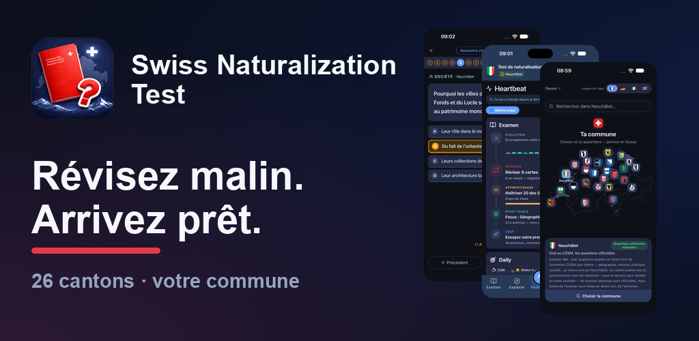
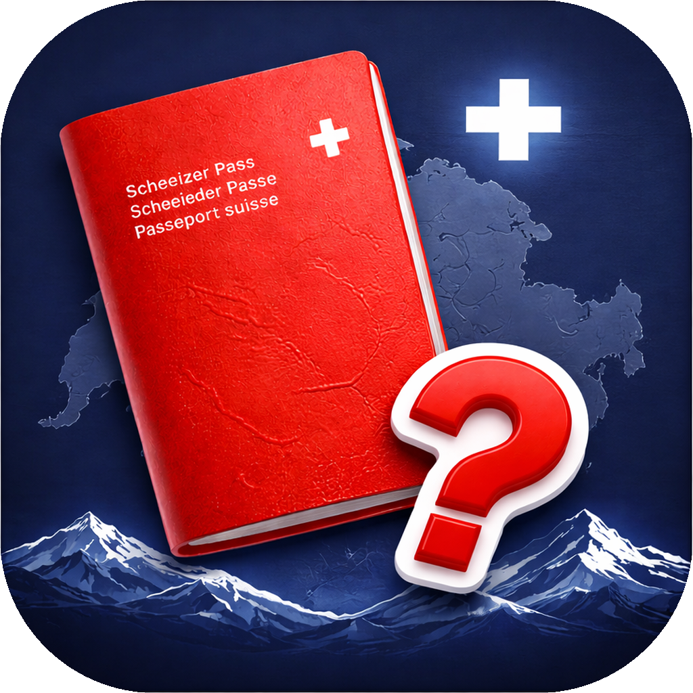
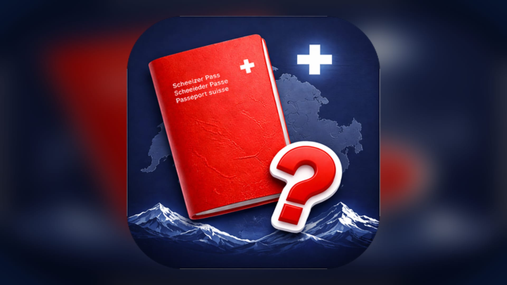

Logos, images et textes
Tout ce qu'un service d'intégration ou une rédaction peut utiliser pour parler de l'application, au même endroit. Rien ici ne se demande et rien ne se crédite : prenez ce qu'il vous faut. Les fichiers sont toujours les fichiers actuels, un lien vers cette page ne vieillit donc pas.
Images
La bannière, le logo, l'icône
Bannière
L'image à utiliser pour une publication ou un article. L'icône, le nom et l'application ensemble.

Télécharger PNG 1024×500

Logo sur fond clair
Télécharger PNG 1523×320
Logo sur fond sombre
Télécharger PNG 1523×320
Icône, carrée
Pour un avatar, une vignette ou un recadrage carré.

Télécharger PNG 1024×1024
Icône, format large (16:9)
Pour une page ou une carte qui recadre en large.

Télécharger JPG 1920×1080


Texte
Trois longueurs, à copier
Une ligne
Une application gratuite pour préparer le test suisse de naturalisation, en quatre langues et pour les 26 cantons.
Court
Swiss Naturalization Test est une application gratuite de préparation au test suisse de naturalisation. Sans publicité, sans compte et utilisable hors ligne. Elle couvre les 26 cantons et existe en allemand, français, italien et anglais.
Long
Swiss Naturalization Test est une application gratuite de préparation au test suisse de naturalisation. Sans publicité, sans compte et utilisable hors ligne. Elle couvre les 26 cantons, y compris les questions communales lorsqu'un canton les publie, et sous chaque question elle indique la source officielle dont la question provient. À côté du choix multiple, un mode oral lit la question à voix haute et laisse le candidat formuler sa réponse. Disponible en allemand, français, italien et anglais.
Prenez celle qui convient. Elles ne disent que ce qui ne change pas.
Usage
Deux choses qui aident, une qui ne va pas
- Recadrez la bannière librement. Si le format dans lequel vous publiez demande d'autres proportions, écrivez-nous les dimensions et vous recevez le fichier déjà coupé.
- Posez le logo sur un fond uni, clair ou sombre, et laissez-lui un peu d'air autour.
- Merci de ne pas redessiner l'icône, de ne pas l'étirer et de ne pas changer la typographie : un logo redessiné cesse d'être une marque, il en devient l'image.
Une question, ou quelque chose qui manque ici : swisscitizenshiptest@gmail.com